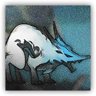
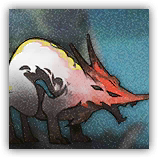

|
 |
兽形的墨魉。画家随手命名的化物，四足兽形，脾气急躁，最喜欢吃杏子。 坐不住。一刻不停地窜来窜去，在画卷里嬉戏打闹，偶尔会咬破画卷。 |
| AC 14 | 先攻 +4（14） |
| HP 39（6d8+12） | |
| 速度 50 尺 | |
| 调整 | 豁免 | 调整 | 豁免 | 调整 | 豁免 | |||||||||
|---|---|---|---|---|---|---|---|---|---|---|---|---|---|---|
| 力量 | 12 | +1 | +1 | 敏捷 | 18 | +4 | +6 | 体质 | 14 | +2 | +2 | |||
| 智力 | 5 | -3 | -3 | 感知 | 12 | +1 | +1 | 魅力 | 10 | +0 | +0 |
| 技能 特技+6，隐匿+6，察觉+3 |
| 免疫 力竭，中毒 |
| 感官 黑暗视觉60尺，被动察觉13 |
| 语言 懂通用语但不能说 |
| CR 2（XP 450；PB +2） |
|
 |
急躁的墨魉。同一种兽形化物，只是脾气比同类还要更急一些。 坐不住。急到连最喜欢的果子都懒得碰，只剩下一味地往前冲。 |
| AC 15 | 先攻 +5（15） |
| HP 54（8d8+18） | |
| 速度 50 尺 | |
| 调整 | 豁免 | 调整 | 豁免 | 调整 | 豁免 | |||||||||
|---|---|---|---|---|---|---|---|---|---|---|---|---|---|---|
| 力量 | 12 | +1 | +1 | 敏捷 | 20 | +5 | +7 | 体质 | 16 | +3 | +3 | |||
| 智力 | 5 | -3 | -3 | 感知 | 13 | +1 | +1 | 魅力 | 10 | +0 | +0 |
| 技能 特技+7，隐匿+7，察觉+3 |
| 免疫 力竭，中毒 |
| 感官 黑暗视觉60尺，被动察觉13 |
| 语言 懂通用语但不能说 |
| CR 3（XP 700；PB +2） |